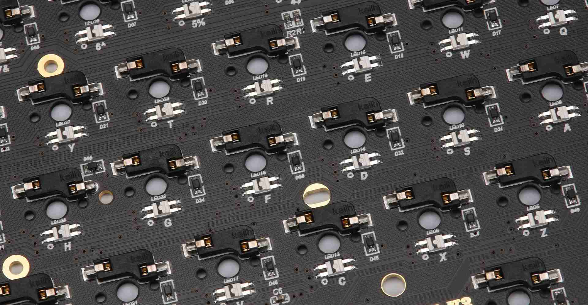

Welcome to KeyBird - Building the Future of Mechanical Keyboards

We are a startup company that is passionate about creating exceptional custom mechanical
keyboards.
Established in 2021, we strive to provide high-quality and unique keyboards to enthusiasts and
professionals alike. Our mission is to push the boundaries of keyboard design, and to deliver
unparalleled performance and customization options to our customers.
At KeyBird, we believe that every keyboard should be a reflection of its owner's personality and
creativity. Our keyboards are more than just tools; they are works of art that combine form and
function to create an unparalleled typing experience. We offer a wide range of customization
options, from keycaps to switches and lighting effects, so that you can create a keyboard that
is
truly your own.
Our team of experienced designers and technicians is dedicated to creating the perfect keyboard
for
you. We work tirelessly to ensure that every keyboard we produce is a work of art, crafted with
precision and attention to detail. We use only the highest quality materials and components, and
we
constantly innovate to bring you the latest and greatest in keyboard technology.
We are committed to bringing you the best possible keyboard experience, and we can't wait to
share
our passion with you. Whether you are a seasoned professional or a keyboard enthusiast, we
invite
you to join the KeyBird community and experience the future of mechanical keyboards.
 KEYBIRD
KEYBIRD